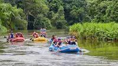
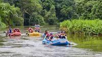

The company's mission is to provide an unforgettable experience that connects people with nature while promoting environmental sustainability and community engagement. With its dedication to safety, fun, and adventure, Mbre Inyang Rafting Company has become a favorite among locals and tourists alike.
The company's mission is to provide an unforgettable experience that connects people with nature while promoting environmental sustainability and community engagement. With its dedication to safety, fun, and adventure, Mbre Inyang Rafting Company has become a favorite among locals and tourists alike.

History
A Brief History Of Mbre Inyang Rafting Company. Mbre Inyang Rafting Company was founded in 2010 by a group of adventure enthusiasts who shared a passion for exploring the beautiful rivers of the region. The name "Mbre Inyang" translates to "fun around water bodies" in the local dialect, reflecting the company's commitment to providing thrilling and safe rafting experiences. Over the years, Mbre Inyang has grown to become one of the leading rafting companies in the area, known for its expert guides, top-notch equipment, and unparalleled customer service. From calm floats to adrenaline-pumping rapids, Mbre Inyang offers a range of rafting trips suitable for all skill levels.
Adventure Awaits You!
 
